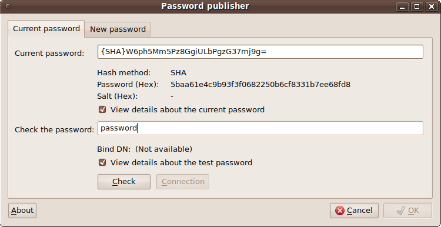
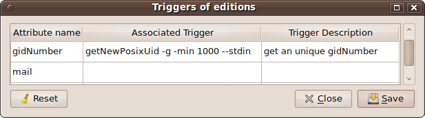

Cette interface partage son code avec l'interface "
domainFrontend". Le nom de l'exécutable doit donc contenir la chaîne de caractères "
Frontend" précédée (sans espace ni autre caractère) par le nom de "l'
objectClass" principal de l'entité gérée (ici : "
person", soit : "
personFrontend").
Cet exécutable peut être appelé au travers d'un lien symbolique qui
respecte la même règle ou, à défaut, qui ne contient pas la chaîne
"
Frontend" (cette règle est récursive - donc valable sur lien de lien ...).
Le principe de cette interface de gestion des comptes utilisateurs est la constitution dynamique du masque de saisie à partir :
- de la liste des "objectClass" définis par l'administrateur au travers du dernier onglet présent lorsque le rôle "adminStruct" est activé.
- de la liste des attributs qui composent chacun des "objectClass" définies pour ce type d'entités ("person").
Lorsque l'administrateur de l'annuaire LDAP ajoute ou supprime un ou plusieurs "
objectClasses",
cette information est mémorisée dans l'annuaire LDAP. Par la suite,
toute définition de compte utilisateur qui sera créée ou modifiée sera obligatoirement impactée par ce nouveau schéma.
Excepté le principe de cette déclaration des "
objectClass" qui composent un compte utilisateur, le reste du fonctionnement de cette interface est le même que celui de l'interface "
domainFrontend".
Cette saisie est basée sur la notion de déclencheurs détaillée
ici ... L'un des utilitaires pouvant être appelé pour effectuer des saisies spécifiques est par exemple : "
slappassword".
Cet utilitaire du projet "
LdapEasyInterface" constitue une interface graphique à la commande "
slappasswd" spécifique au projet "
openLdap".
Il peut aussi être utilisé de façon autonome pour modifier ou vérifier
un mot de passe dans l'annuaire LDAP, y compris par tentative de
connexion (cf.: "
slappassword --help").

Syntaxe :
slappassword [ (-H/--host "hostname[:port]") / ("anIPCLdapConnectionIsActive") --dn "userDn" [--update] ] [--date "secondesSince1970"] [--minLength/-m #] [{scheme}currentHashedPassword / --stdin]
- L'option --host/-H : sert à indiquer le nom du serveur hébergeant l'annuaire LDAP (pour le test de connexion et/ou l'option "--update").
Cette option n'est pas nécessaire si une connexion est par ailleurs active en mémoire
partagée (autre interface ldapEasyInterface en cours d'exécution et
elle-même connectée). Cette dernière sera alors utilisée pour établir la connexion LDAP de l'utilitaire à l'annuaire.
- L'option --dn/-d : sert à indiquer le DN
de l'identifiant de connexion pour lequel on souhaite vérifier/mettre à
jour le mot de passe. Elle est associée à l'option précédente "-H" ou bien à la connexion IPC (shared memory) courante.
- L'option "--date"
permet de spécifier une date de référence (au format UNIX : secondes
depuis 1970) avant laquelle la modification du mot de passe ne sera pas autorisée (cf. ici),
- L'option --update :
permet de spécifier que, si le test de connexion a bien abouti (ou qu'une connexion d'interface "ldapEasyInterface" est déjà active - décrite en "shared memory") et qu'un
nouveau mot de passe a été saisi , alors la mise à jour de ce nouveau
mot de passe dans l'annuaire sera effectivement tentée lorsque l'interface sera quittée par le bouton "Ok". L'attribut "userPassword" sera donc mis à jour (si les droits LDAP le permettent).
Attention à l'utilisation de cette option lorsque l'interface
est appelée à partir d'une interface graphique d'administration telle
que "personFrontend" ou "posixGroupFrontend".
En effet, cela pourrait entrer en conflit avec la mise à jour réalisée
par l'interface appelante elle-même lors de la validation ...
- Le dernier paramètre est la valeur de hachage que l'on souhaite
voir retournée par l'interface de saisie en cas d'abandon (clic sur le
bouton "Cancel"). Cela permet à
l'interface d'appel de ne pas modifier la valeur de son champ de saisie
(ou : remplacer l'ancienne valeur par la même) en cas abandon de la
nouvelle saisie (clic sur "Cancel").
- Ce dernier paramètre peut être remplacé par l'option "--stdin" ou simplement "-"
; auquel cas la valeur d'abandon retournée par l'interface sera lue
directement sur l'entrée standard de son processus d'exécution (option
utilisée dans le cas d'un interfaçage avec les interfaces "ldapEasyInterface" telles que "personnFrontend".
Dans ce cas, la longueur de cette valeur n'est alors pas limitée,
contrairement au passage par paramètre sur ligne de commande - même si
en l'occurrence ici, dans le cas de saisie de mots de passe, le
problème ne se pose pas réellement ...).
(Tous ces paramètres sont optionnels - signification habituelle des "[]" ... ;-).
Les sources de "
slappassword" (version 0.3 - 20101006) sont
ici ...
Limitation : Comme expliqué ci-dessus, cette interface graphique utilise, pour fonctionner, l'utilitaire "
slappasswd" du projet "
openLdap". Aussi, "
slappassword" ne permet-elle de faire que ce que permet de faire "
slappasswd" en mode commande "
shell" ...
A ce jour (2010/08), "
slappasswd" gère la liste des formats suivants : "
SHA, SSHA, MD5, SMD5, CRYPT et Plain Text" ; il ne permet pas la vérification des mots de passe au format "
SSHA" et "
SMD5", mais uniquement leur définition (le bouton "
Check" de l'interface graphique "
slappassword" restera donc invalide lorsque le mot de passe courant sera dans l'un de ces deux formats).
Nota : le source de la commande "
slappassword" est le même que celui de la commande "
ntpassword" (cf. "
slappassword -help"). De fait, les options [
-L / -N] de la commande "
ntpassword" sont utilisables sur "
slappassword", le fonctionnement résultant étant dans ce cas effectivement celui de la commande "
ntpassword"
Autre exemple d'appel d'utilitaire externe pour la saisie d'informations spécifiques "imageSelector":
Syntaxe : imageSelector [ -/--stdin ]
Le fonctionnement est similaire à celui de l'utilitaire précédent ("
slappassword") quant à la valeur d'abandon passée en entrée standard du processus d'exécution ...
Cette interface permet donc de visualiser l'image courante (passée sur
l'entrée standard) ou bien, d'en sélectionner une nouvelle qui sera
envoyée sur la sortie standard du processus d'exécution lors de
validation de la sélection par le bouton "
Ok"
... Si aucune image n'est sélectionnée lors de la validation, aucune
image ne sera envoyée (sortie standard vide). Cela permettra en
l'occurence d'effacer le contenu éventuel de l'attribut d'appel ("
jpegPhoto", par exemple) du masque "
personFrontend" (par exemple), contrairement à la frappe du bouton "
Cancel"
qui, renvoyant "
exit 1", laissera au
final son contenu inchangé au sein de l'interface graphique appelante ... )
Le code source de "
imageSelector" (version 0.2 - 20100921) est
ici ...
Saisie d'utilisateurs existants ou de groupes d'appartenance - utilitaire "groupSelector" :
L'utilitaire "
groupSelector" s'obtient par : "
ln [-s] sambaSidSelector groupeSelector" ... (dont il partage le source).
Syntaxe : "
groupSelector --domain "dnsDomainName" [--uidNumber "minUidNumber"] [--gidNumber "minGidNumber"] [-t/--type "sambaSamAccount/sambaGroupMapping/posixUser/posixGroup"] [--stdin / "currentValue"]"
- L'option obligatoire "-d/--domain" permet de renseigner le nom du domaine dans lequel rechercher la racine du "SID".
- Les options "--uidNumber/-u" et "--gidNumber/-g" servent à renseigner les valeurs minimales des "id" qui pourront être affichées dans la liste de sélection ...
- l'option "-t/--type"
permet de figer la première liste de valeurs (comboBox) du masque
d'édition afin de limiter les valeurs sélectionnables aux informations
cohérentes au contexte d'appel de l'utilitaire ...
- une valeur initiale de "uidNumber" ou "gidNumber" peut être passée en argument de la commande (ou bien : "--stdin/-" si la valeur doit être passée en entrée standard du processus, comme dans le cas des interfaces "ldapEasyInterface-Frontend") pour permettre à l'utilitaire "groupSelector" de suggérer une valeur initiale à l'opérateur.
Nota : Cet utilitaire d'aide à l'édition "
groupSelector" se connecte à l'annuaire
LDAP avec les informations de connexion de l'interface appelante (via les
IPC
-
shared memory). Il
ne peut pas, en effet, se connecter seul à l'annuaire pour y rechercher
les informations qui lui permettront de déterminer une valeur cohérente
de "
SID" ; une session de connexion doit donc déjà être active via
l'une des interfaces graphiques d'administration "
ldapEasyInterface" ...
Ici se trouvent deux exemples
d'utilisation dans la définition des déclencheurs de l'interface
d'administration de gestion des comptes et groupes "posix" ...
Elles peuvent être gérées directement par la base d'annuaire LDAP (certaines possibilités existent déjà au sein du projet "
OpenLdap"), ou bien, des outils spécifiques peuvent être développés et utilisés comme
déclencheurs, notamment "
sur mise à jour" ... (Exemples : "
sambaSidSelector" ou "
setAttribute").
Exemple : création d'un "
uidNumber" ou "
gidNumber" posix, unique dans tout l'annuaire, cela grâce à l'utilitaire "
getNewPosixUid".
Syntaxe : "
getNewPosixUid
[-g/--group] [-min "minValueOfId"] [ --stdin /
"theValue" ] [ -q/--quiet ] [ --onError "Value"
]"
- L'option "-g/--group permet d'obtenir un identifiant de groupe ("gidNumber") plutôt qu'un "uidNumber" (équivalent à la commande "getNewPosixGid"). Pour la commande "getNewPosixGid", l'option "-u/--user" permet d'en obtenir le comportement de la commande "getNewPosixUid" ...
- L'option "--min" permet de spécifier une valeur minimale d'identifiant ...
- l'option "--stdin/- " (ou bien, la valeur simplement passée en argument de la ligne de commande, hors option) permet
d'indiquer une valeur initiale. Si cette valeur est conforme avec l'éventuelle option "--min", alors elle est conservée (répétée en sortie standard).
- l'option "-q/--quiet" permet de supprimer les affichages en cas d'erreur d'exécution.
- l'option "--onError" permet de retourner une valeur spécifique (passée en argument de l'option) sur échec de la commande.
Nota : Cet utilitaire d'aide à l'édition "
getNewPosixUid" se connecte à l'annuaire
LDAP avec les informations de connexion de l'interface appelante (via les
IPC
-
shared memory). Une session de connexion doit donc déjà être active via
par exemple l'une des interfaces graphiques d'administration "
ldapEasyInterface" ...
Exemple de définition de déclencheur dans l'interface de gestion des utilisateurs "personFrontend" :
Exemple de définition de déclencheur dans l'interface de gestion des groupes posix "posixGroupFrontend" :

L'option "
[ -g ]" est équivalente à l'utilisation de la commande "
getNewPosixGid" obtenue ainsi : "
ln [-s] getNewPosixUid getNewPosixGid" ...
Le code source de cet utilitaire est
ici ...
tester ...